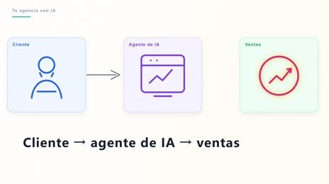
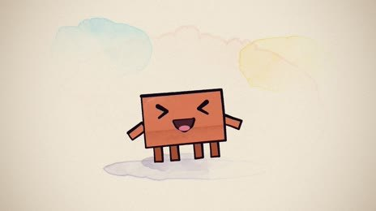
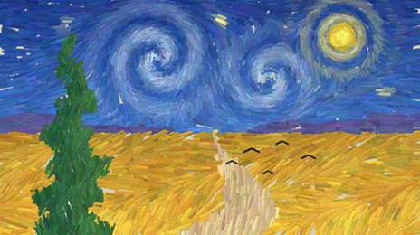
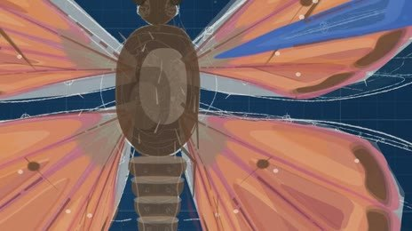
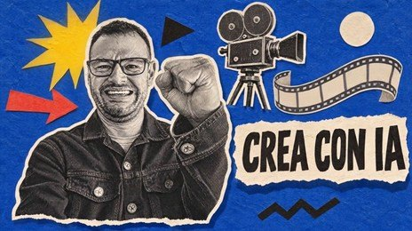
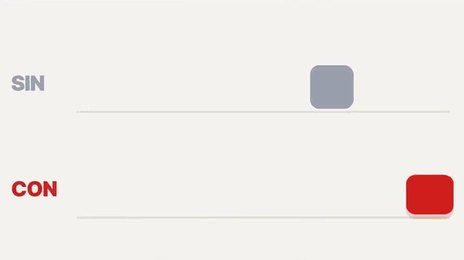
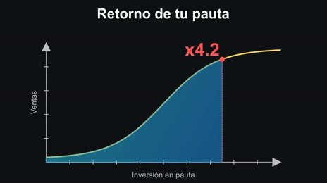
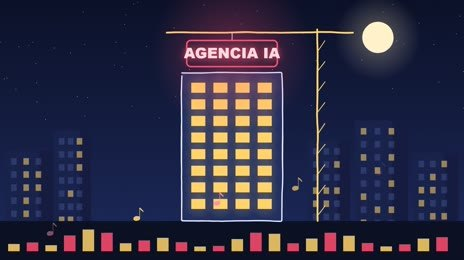
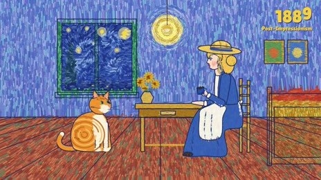

1HandDraw
Videos explicativos dibujados a mano, con voz de IA gratis.
github.com/ToBeWin/HandDraw-Skill GRATIS · EN ESPAÑOL
GRATIS · EN ESPAÑOL
Las 9 del video, con su enlace y cómo instalarlas. Le pides la animación a Claude en español y él la hace con código: gratis y de código abierto.
🚀 Los agentes de IA con los que hago cosas como esta les están sumando entre 5.000 y 10.000 dólares al mes a los clientes con los que trabajo. Están dentro de Imperio, para multiplicar las ventas de los negocios.Al final te cuento cómo funciona ↓Claude Code viene con el plan Pro (unos 20 dólares al mes). El plan gratis no lo incluye. Si ya pagas Pro o Max, salta al paso 2.
Ver planes de Claude →Escribe terminal en el buscador de tu computador y ábrela. Pega el comando de tu sistema y dale Enter. No muestra avance mientras descarga: espera a que termine.
WINDOWSirm https://claude.ai/install.ps1 | iex
curl -fsSL https://claude.ai/install.sh | bash
Cuando termine, cierra la terminal y vuelve a abrirla. Los comandos son los de la página oficial de instalación. ¿Prefieres sin terminal? La app de Claude para el computador trae Claude Code en la pestaña Code.
Crea una carpeta en Documentos llamada animaciones. Luego, en la terminal:
cd ~\Documents\animaciones claude
cd ~/Documents/animaciones claude
La primera vez te abre el navegador para entrar con tu cuenta de Claude. Entras, vuelves a la terminal y ya está Claude Code esperando tu mensaje. Si te pide permiso para crear archivos o instalar algo, acéptalo: así trabaja.
Copia este mensaje, pégalo en Claude Code y dale Enter. Claude lee las instrucciones de cada una y las instala:
Instala en mi Claude Code estas 9 skills para animar. De cada una, lee su README y sigue sus pasos de instalación, incluidos los programas que necesite. Al final dime cuáles quedaron listas y si alguna me pide una llave o un pago: 1. https://github.com/ToBeWin/HandDraw-Skill 2. https://github.com/JohnHeibel/ClaudeAnimationBase 3. https://github.com/cloveric/claude-drawing-skill 4. https://github.com/alexgreensh/anidoodle 5. https://github.com/LunaAI519/motion-skill 6. https://github.com/iart-ai/motion-design-skills 7. https://github.com/adithya-s-k/manim_skill 8. https://github.com/iart-ai/javascript-animation-skills 9. https://github.com/alchaincyf/huashu-art-motion
Cuando termine, escribe /exit y vuelve a abrir Claude Code con claude para que cargue las skills nuevas. ¿Solo quieres una? Escríbele a Claude Code "Instala esta skill siguiendo su README:" y pega el enlace de la que quieras (están abajo).

Videos explicativos dibujados a mano, con voz de IA gratis.
github.com/ToBeWin/HandDraw-Skill
Caricaturas pintadas a mano con Clawd, el personaje de Claude, y 31 emociones actuadas.
github.com/JohnHeibel/ClaudeAnimationBase
Ilustraciones en más de 80 estilos (acuarela, ukiyo-e, óleo…), y ves cómo se van pintando.
github.com/cloveric/claude-drawing-skill
Cortos animados completos, con música, sin generar ni una sola imagen con IA.
github.com/alexgreensh/anidoodle
Le das una foto y te la convierte en un video estilo collage retro. Es la única que cobra aparte: genera la imagen y el video con Nano Banana y Kling.
github.com/LunaAI519/motion-skill
Le enseña a Claude timing, easing, tipografía y color, para que tus animaciones se sientan profesionales.
github.com/iart-ai/motion-design-skills
Animaciones de matemáticas y gráficos al estilo 3Blue1Brown.
github.com/adithya-s-k/manim_skill
Cada cuadro dibujado con código, hasta la música. Cero imágenes.
github.com/iart-ai/javascript-animation-skills
35 estilos de arte que se mueven. Viene en chino, pero tú le hablas a Claude en español.
github.com/alchaincyf/huashu-art-motionEscríbele en español lo que quieres ver. Tres ejemplos para arrancar:
Con la skill claude-drawing, pinta un atardecer en la playa en acuarela y muéstrame cómo se va pintando.
Con anidoodle, hazme un corto animado de 10 segundos de una taza de café que se despierta, con música.
Con la skill de Manim, explícame con una animación cómo crece el interés compuesto.
Para ver resultados ya: Claude Drawing y AniDoodle. Para explicar algo con gráficos: Manim. Para darle movimiento a tus fotos: Motion.
Las 9 son gratis y de código abierto; solo necesitas tu plan de Claude. Motion es la excepción: usa Nano Banana y Kling, que cobran por cada imagen y cada video.
Sí. Tú le hablas a Claude en español y él lee las instrucciones de la skill en el idioma en que estén.
Cópiale el error a Claude Code y dile "arréglalo". Casi siempre es un programa que falta, y él lo instala.
Haz en 3 días el trabajo de todo un mes.
Ten un equipo de marketing de 4 personas trabajando para ti por unos $25 al mes: los agentes Imperio. Te hacen:
Sin saber de tecnología: solo copias, pegas y facturas.
Son los mismos agentes que hoy les suman entre $5.000 y $10.000 dólares extra al mes a los negocios con los que trabajo: automatizan todo el marketing y hacen el trabajo de 4 personas.
Escríbeme “IMPERIO” por Instagram →Te cuento cómo funciona y si encaja con tu negocio.